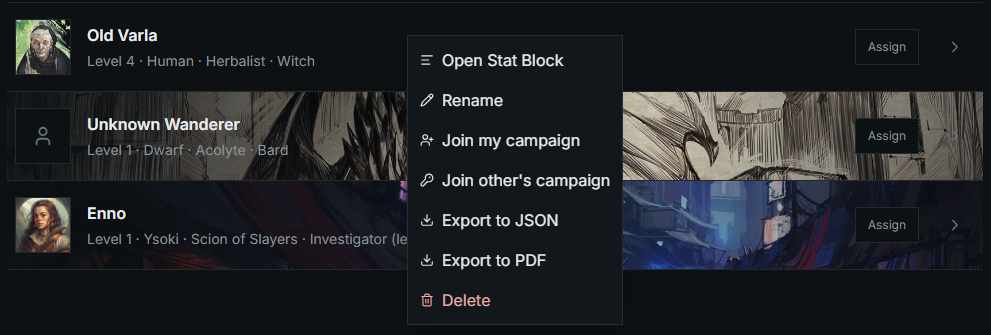

Characters
You need a character you own before that character can join a campaign.
These calls do not run on wanderersguide.app yet. Import the character into this workspace first, then open it here. Why the two sites look the same.
- Open the workspace and choose Characters in the header.
- Open a character you already have, or create one.
- The campaign layout groups characters under Campaigns I own and Campaigns I'm on. A crown marks a campaign you own. An empty heading reads None.
- Right-click a character card for Open Stat Block, Rename, Join my campaign, Join other's campaign, Unassign (when the character is on a campaign), export as JSON or PDF, and Delete.

Export writes the character file through wgui-export-character. You can export a character you own.
Next: Campaigns